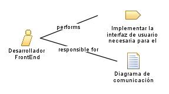

| Role: Desarrollador FrontEnd |
| |
 |
| responsable de crear la interfaz de usuario visualmente atractiva y fácil de usar para los usuarios del sistema de facturación y contabilidad. |
| Synonyms:
Desarrollador web frontend, Desarrollador de interfaces de usuario, Desarrollador de front-end. |
|
Relationships
 |
| Primary Performs |
|
| Modifies |
|
Main Description
|
El desarrollador frontend trabaja en colaboración con los analistas de negocio y los diseñadores para traducir los
requisitos de la interfaz de usuario en código, Implementa el diseño de la interfaz de usuario, asegurándose de que sea
intuitiva, receptiva y compatible con diferentes navegadores y dispositivos. Su objetivo principal es ofrecer a los
usuarios una experiencia fluida y agradable al utilizar el módulo de facturación y contabilidad |
Staffing
| Skills |
Conocimientos en diseño de interfaces de usuario y experiencia de usuario, Habilidades de resolución de problemas,Capacidad
para trabajar en equipo |
| Synonyms |
Desarrollador web frontend, Desarrollador de interfaces de usuario, Desarrollador de front-end. |
|